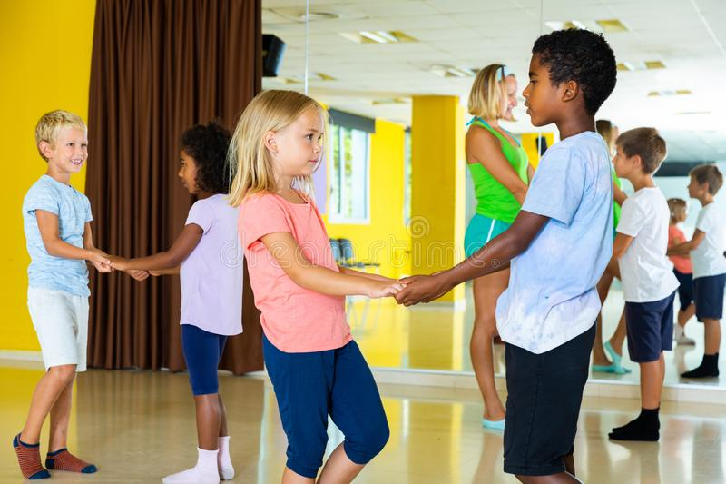
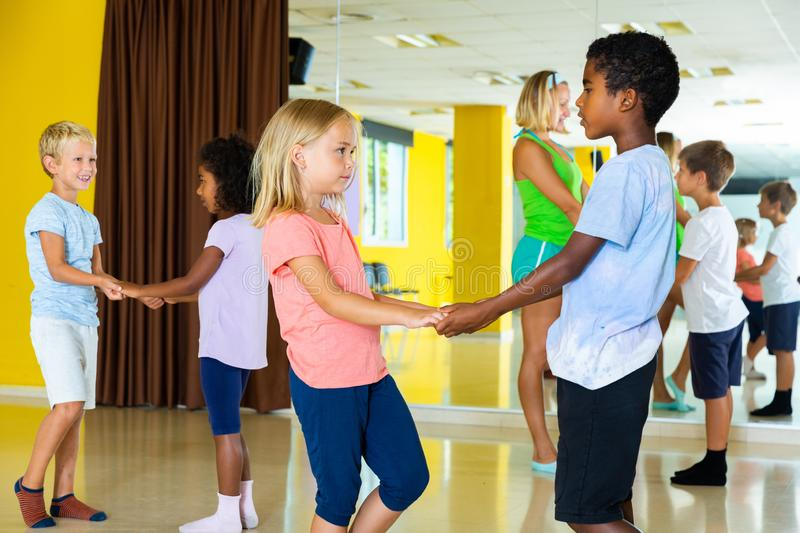
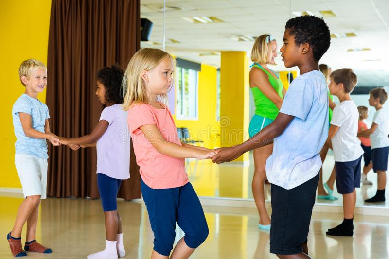
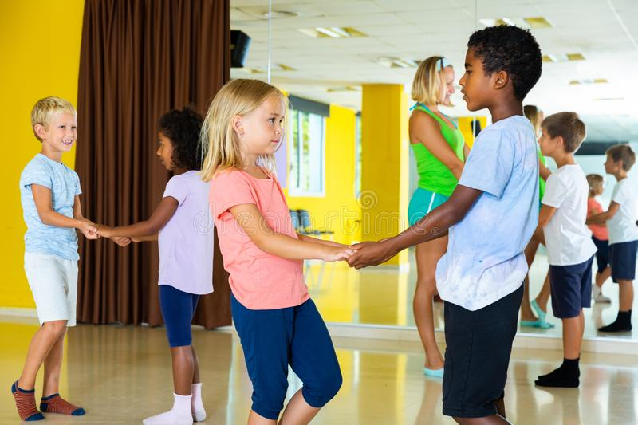

Nuestra visión es convertirnos en una institución lider a nivel nacional, implementando una metodología encaminada al afianzamiento de todas las habilidades , destrezas de los infantes y adolescentes haciendolos parte cada día de nuestro proceso pedagogico, nuestra institución esta preparada para preparar a las futuras generaciones en individuos capaces de crear, resolver inquietudes, ser personas tolerantes, que esten dispuestos a respetar las diferencias de las demás personas, lo cual ayudará al mundo a ser un lugar mejor para todos.
Ser la primera institución en Colombia en el 2024, que logra que su acompañamiento pedagogico integre valores y principios ambientalistas, con enfoque constructivista, que se evidencien en los infantes a través de su creatividad, emprendimiento e innovación